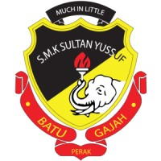

Logo Sekolah Menengah Kebangsaan Sultan Yussuf
Alamat Sekolah:
No.3 Jalan Ilmu,31000, Batu Gajah, Kinta, Perak Darul Ridzuan, Malaysia
Moto Sekolah:
Multum In Parvo
Pengetua Sekolah:
Encik Ghazali Bin Hashim
Lagu Sekolah:
Sekolah Mengengah Sultan Yussuf
Gedung ilmu pengetahuan
Tapak semaian insan
Pusat kebanggaan tempatan
Pengetahuan asas kebahagiaan
Berdikari serta berbakti
Carilah kemajuan
Bekalan hidup kita nanti
Berazam mencapai kemajuan
Hadapi semua cabaran
Berpadu pada Rukun Negara
Bina Malaysia berjaya
Berbangga dengan satu bahasa
Teguh bersama satu bangsa
Tumpukan taat Setia
Negara kita tetap jaya
Tokoh-tokoh Sekolah:
Almarhum Sultan Azlan Shah (Sultan Perak ke 34)
Tan Sri Jeffrey Cheah Fook Ling (Pengasas Sunway Group)
Dato' Seri N.S. Selvamany (Tokoh Guru Kebangsaan 1997)
Kapten Dr. A. Soorian (Timbalan Presiden DAP 1969-1972)
Dato' Haji Ahmad bin Haji Saadi (Setiausaha Kerajaan Negeri Perak 1987-1992)
Tan Sri Dato' Seri Abdul Rahim bin Dato' Tak (Ahli Dewan Negara Perak 1984)
Dato' Dr. Chan Kwai Weng (Pakar Perubatan Gleneagles Intan, Kuala Lumpur 1996)
Dr. Gregory Thong Tin Sin (Ahli Institusi Sumber Manusia)
Prof. Dr. Harbindar Jeet Singh (Ahli Majlis Persekutuan Fisilogi Asian dan Ocenian 1990-1998)
Dato' Hajjah Hendon binti Haji Din (Pengarah Urusan Syarikat Zet Enterprise Sdn. Bhd.)
Dato' Haji Ibrahim bin Haji Yeop (Penolong Kanan Pesuruhjaya Polis 1983)
YB Kumaresan Aramugam (Ahli Dewan Undangan Negeri Pulau Pinang untuk Batu Uban 2018-kini)
Laman Sesawang Rasmi
http://smksy.wordpress.com/ http://smksy.edublogs.org/ http://www.smksy.com/"
Salah satu blok dalam SMK Sultan Yussuf